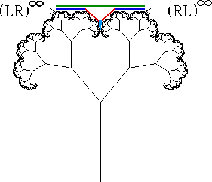

The calculations of the dimension graph are based on finding the relation between r and q, and determining the number and scaling of the pieces of the fractal.
For the self-contacting q = 40 tree pictured below, we illustrate finding the dimension of the shortest path.
Taking the horizontal extent of the shortest path to be 1 (the length of the green line in the figure below), we see the generator of the shortest path breaks into 6 segments, two of length r2 (dark blue), two of length r3 (red), and two of length r4.
(The lengths are computed by finding the symbol strings corresponding to the ends of the generator segments.)
The dimension is given by the Moran equation, in this case taking the form
2r2d + 2r3d + 2r4d = 1
so d = 1.16774.
|  |
Return to Various dimensions.